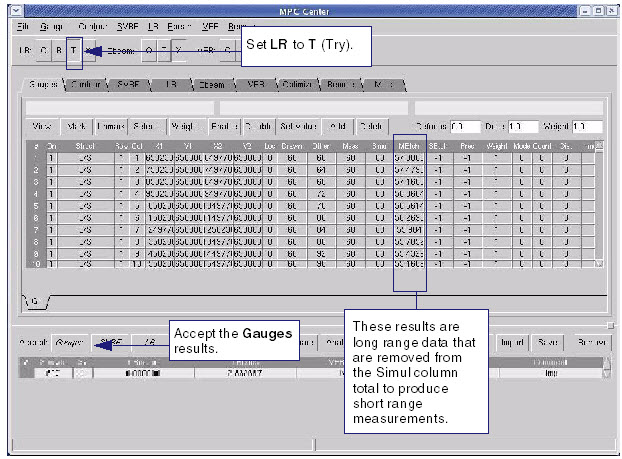

Use the T (Try)
option for Long Range models to extract Long Range effects from
the Short Range data
Procedure
- Click the Gauges tab.
- In MPC Center button bar,
set the run control so that only the LR options are enabled. Set LR to T (Try).
Figure 1. Gauges Tab (LR Try)
- Click Run.
- Examine the results in the
Simul column and the MEtch column. The Simul column represents the
results from the long range simulation. The difference between the
numbers in the Simul column and the corresponding values in the
MEtch column represent the short range data.
- Click the Gauges button in the Accept button
bar (at the bottom of the dialog box). Accepting the gauges result
removes the long range data from the short range measurements.